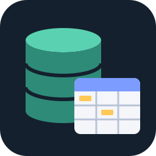

DuckDB Viewer & SQL Editor
DuckDB Viewer & SQL Editor, a VS Code extension by Zovo
Open .duckdb files in VS Code, browse their schemas and tables, and run SQL on DuckDB, CSV, Parquet and JSON files. DuckDB is built in, so there is nothing to install, and nothing leaves your computer. By Zovo.
Free, MIT license. Needs VS Code 1.75.0 or newer. Extension ID zovo.zovo-duckdb-viewer, version 0.1.0.

Questions people ask
Is DuckDB Viewer & SQL Editor free?
Yes. DuckDB Viewer & SQL Editor is free and MIT licensed.
How do I install DuckDB Viewer & SQL Editor?
Click "Install in VS Code" above, or search for zovo.zovo-duckdb-viewer in the Extensions view.
Free
- Open .duckdb and .ddb files with a click in the Explorer. They open read-only, so the file never changes, even while another program uses it.
- Schema tree: schemas, tables with row counts, views, and columns with their types, primary keys and foreign keys. Filter it by table or column name.
- Table grid: 200 rows a page, click a header to sort, filter rows by any text or by a SQL condition such as
where price > 100. Double-click a cell to see the whole value. - SQL editor with a results grid, row count and timing. Ctrl+Enter (Cmd+Enter) runs the query or the selected text. Cancel stops a long query.
- Query with DuckDB: right-click a CSV, TSV, Parquet, JSON or NDJSON file to query it in place, with no import. Joins across files and globs such as
'logs/*.parquet'work. - Copy a page or a result as CSV or as a Markdown table, or copy one value.
- Structure tab: column types, defaults, keys and the SQL of each view, plus the file's DuckDB storage version.
- Reads files written by DuckDB 1.x and 2.0. A file from a newer DuckDB, a SQLite file or a damaged file shows a clear message instead of an error dump.
- Offline: DuckDB 2.0 runs as WebAssembly inside the extension, with the Parquet and JSON extensions bundled. It never downloads extensions and never reads URLs. Works the same on Windows, macOS and Linux, and in Cursor and Windsurf.
Zovo Pro: USD 19 once, for the Pro tools in every Zovo extension. Each Pro tool below has 3 free tries on your computer, and a try counts only when the tool has made its file, diagram or report.
Zovo Pro tools
- Export to Parquet, CSV, JSON or XLSX: a table, a view, a query result or a whole CSV, Parquet or JSON file. Parquet with zstd, snappy or gzip, CSV with your delimiter, JSON as one array or one object per line, and Excel files with numbers kept as numbers. Split the output into one folder per value of a column (Hive partitions).
- Schema diagram: every table of a DuckDB file with its columns, primary keys and foreign key lines, which you can pan and zoom. Save it as SVG or copy it as a Mermaid ER diagram for your docs.
- Compare two DuckDB files: tables and views added or removed, columns added, removed or retyped, row counts, and rows added, removed or changed by primary key, with example keys. The result is a Markdown report you can save or paste into a pull request.
Find them in the viewer's top bar, in the Command Palette under "DuckDB", and on the right-click menu of .duckdb files. The setting duckdbViewer.showProTools hides them.
How to use
- Click a
.duckdbfile in the Explorer, or run DuckDB: Open Database File.... DuckDB: Open the Sample Database opens a small shop database with keys and a view. - Pick a table on the left. Click a column header to sort, type in the filter box to filter.
- Open the SQL tab and press Ctrl+Enter to run a query. In a database file, table names work without the database prefix:
SELECT * FROM sales.orders. - For a data file, right-click it and choose Query with DuckDB, or run DuckDB: New SQL Query and name files by path.
Settings
| Setting | Default | What it does |
|---|---|---|
duckdbViewer.pageSize | 200 | Rows per page in the Data tab |
duckdbViewer.resultLimit | 1000 | Rows a SQL query shows at most |
duckdbViewer.memoryLimitMB | 0 | Memory DuckDB may use (0 = DuckDB's default) |
duckdbViewer.showProTools | true | Show the Zovo Pro tools |
duckdbViewer.askForRating | true | Ask once for a rating, after real use |
duckdbViewer.showSupportLinks | true | The small links at the bottom of the viewer |
Good to know
- Database files always open read-only. INSERT, UPDATE, DELETE and CREATE TABLE are refused with a short note. Temporary tables work:
CREATE TEMP TABLE t AS SELECT .... - The free viewer never writes files:
COPY ... TOis refused. Export (Zovo Pro) writes only to the file or folder you pick. - Bundled: DuckDB's own functions plus the Parquet and JSON extensions. Other extensions (spatial, httpfs, excel, sqlite) are not included, and the viewer never downloads them.
- A database file that another DuckDB process has open can still be read, but rows that process has not checkpointed yet may not show.
- The DuckDB engine starts the first time you open a file or a query, which takes about half a second, and uses about 300 MB of memory while a viewer is open.
- Encrypted DuckDB files are not supported.
Guides
Install DuckDB Viewer & SQL Editor
Click the button to open VS Code and install it, or press Ctrl+P (Cmd+P on macOS) in VS Code and run ext install zovo.zovo-duckdb-viewer.
Free, MIT license. Needs VS Code 1.75.0 or newer. Extension ID zovo.zovo-duckdb-viewer, version 0.1.0.
Source code and issues are on GitHub.
Zovo Pro and support
Zovo Pro: USD 19 once, every Zovo viewer. It turns on the Pro tools in this extension and in the other Zovo extensions you use. The free features stay free.
After a card payment your license key shows on the next page. Paste it with the command "Zovo Pro: Enter a key".
You can also support the work with no Pro:
Need your format supported?
Open a format request with a sample file, and I reply there whether it can be done. For USD 299 once, through this GitHub Sponsors tier, I add your file format or a missing feature to this extension, with tests, within 7 days.